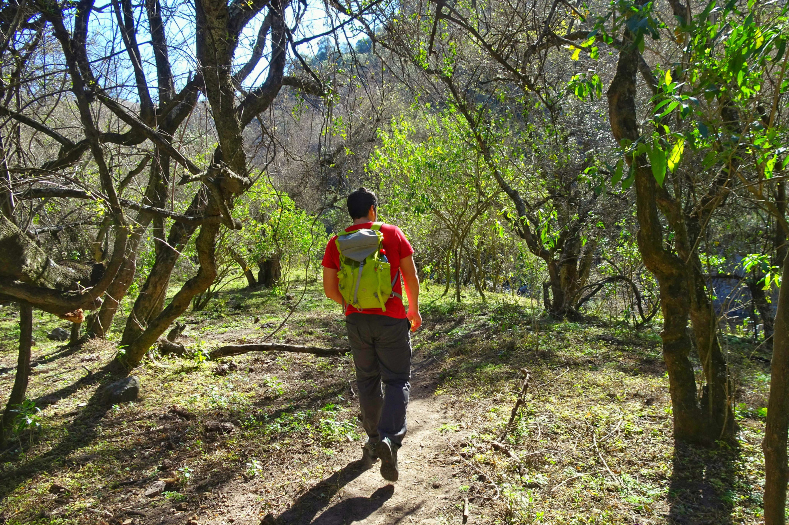
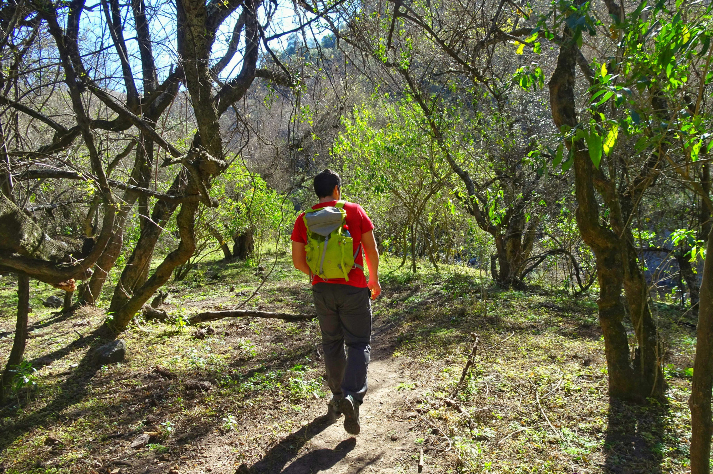

Bosque nativo, cascadas y una Capilla Unica
A sólo 8 km de la zona céntrica de Unquillo (y a 40k de cordoba ciudad), se encuentra un destino ideal para principiantes del senderismo. Dentro de la Reserva Hídrica, Natural y Recreativa Los Quebrachitos, con casi 5000 hectáreas, es posible recorrer senderos boscosos entre arroyos y vertientes. A través de sus rincones, se pueden hallar ejemplares con más de un siglo de algarrobos, quebrachos blancos, molles, cocos, acacias y moras, entre otros ejemplos de flora autóctona. La reserva está atravesada por los afluentes del río Unquillo: los arroyos Cabana y las Ensenadas. ¿Un imperdible ? La Cascada de Los Chorrillos, ideal para refrescarse en los días de verano. Por ultimo, y no menos importante, se puede visitar la Capilla Buffo, construida como homenaje del italiano